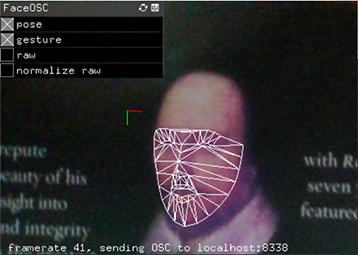
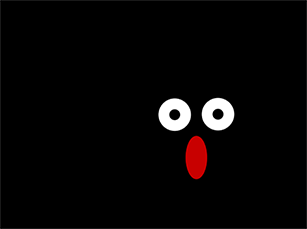

顔とインタラクションする（FaceOSC）
カメラがとらえた画像から顔を検知し、その位置、目や口の開き方にインタラクティブに応答するProcessingスケッチを作成します。FaceOSCを使うと、顔の位置や大きさに加えて、目、鼻孔、口の開気の程度を知ることができます。FaceOSC

FaceOSCは顔を追尾する機能をもち、顔のposeとgestureの情報を Open Sound Control (OSC)を介して送り出します。FaceOSCのサイト からダウンロードし、processingのスケッチの実行前に起動しておきます。 FaceOSCを起動すると、コンピュータに接続されたカメラ映像上の顔を識別し、poseとgestureの情報を点と線で表示されます。FaceOSCのポート番号はデフォルトで8338で、このポートを通してデータが送られます。
FaceOSCが送るデータは以下の通りです。コロンの右側はデータ認識するための名前で、OSCアドレスパターンと呼ばれます(次節参照)。
- [1]Pose
- 顔の中央: /pose/position
- スケール: /pose/scale
- 顔の向き: /pose/orientation
- [2]Gestures
- 口の幅: /gesture/mouth/width
- 口の高さ: /gesture/mouth/height
- 左眉毛の高さ: /gesture/eyebrow/left
- 右眉毛の高さ: /gesture/eyebrow/right
- 左目の見開き: /gesture/eye/left
- 右目の見開き: /gesture/eye/right
- 顎の幅: /gesture/jaw
- 小鼻の広がり: /gesture/nostrils
- [3]Found
- 顔を検知したかどうか: /found
Open Sound Control (OSC)
Open Sound Controlは、コンピュータとマルチメディアデバイスとの間で、あるいはプログラム同士で、情報を送るために定められた通信規約(プロトコル)です。音楽演奏データをネットワークを介してリアルタイムに送って電子楽器を制御するために開発されたので、open soundの名前がついています。送るデータの形式は、 OSCアドレスパターンとその値からなります。OSCアドレスパターンはデータを識別する名前で、URLのように／で区切られています。例えば、FaceOSCの場合、顔の中央の位置データのアドレスパターンは、 /pose/positionです。
ProcessingのOSCライブラリには、送られてくるデータを、アドレスパターンを指定して取り出すメソッドが用意されています。 ProcessingでOSCを使うには、oscP5ライブラリをインポートしておきます。
メニュー[スケッチ] [ライブラリをインポート][ライブラリ-を追加」で、oscP5を選択して、インストールします。インストールすると、サンプルのContribute Librariesの中にサンプルが入るので、サンプルを動かして、機能を実験することができます。詳しくは、 oscP5のAPIを参照。
顔情報を使うサンプル
Processingのスケッチで、FaceOSCからデータを受け取るには次のようにします。- (1) ライブラリのインポート
import oscP5.*;
- (2) OscP5オブジェクト用変数の定義
OscP5 oscP5;
- (3) 引数にポート番号8338を指定して、OscP5オブジェクトを生成（setup()の中）
oscP5 = new OscP5(this, 8338);
- (4) OSCから受け取る情報からの値の取り出し
2つの方法がある。- 【方法１】 特定のアドレスパターンのデータを受信したら実行するメソッドを、plugメソッドを使って指定する（setup()の中）。メソッド名は任意で、メソッド定義内に処理を記述する。次の例は、左目開きのデータを受信したらeyeLeftGetメソッドを実行するという指定。リストA3_1はこの方法を使っている。
oscP5.plug(this, "eyeLeftGet", "/gesture/eye/left");第1引数: 第2引数のメソッドを持つオブジェクト、自分自身thisを指定
第2引数：OSCアドレスパターンが示すデータを受信したら起動するメソッド名(自分で決める)
第3引数：OSCアドレスパターン(FaceOSCが決めているもの、前節参照)
plugメソッドで指定したメソッドを定義する。public void eyeLeftGet(float h) { println("eye left: " + h); //受信した値の確認のためコンソールに表示(任意) eyeLeftH = h; //引数hを使った処理を指定。変数eyeLeftHに代入 } - 【方法２】 OSC通信のメッセージを受け取ると自動的に呼び出されるoscEventメソッドを定義する。引数のデータ型はOscMessage。
その中で受信データが求めるアドレスパターンのデータであるかをcheckAddrPatternメソッドを使って確認し、そうであれば、値を取り出す処理を書く。例えば/pose/positionと/gesture/mouth/widthを取り出したいなら次のように書く。checkAddrPatternメソッドは引数で指定されたアドレスパターンのデータがあるとtrueを返す。
float facePosX, facePosY, mouseW; void oscEvent(OscMessage message) { if(message.checkAddrPattern("/pose/position")) { facePosX = message.get(0).floatValue(); facePosY = message.get(1).floatValue(); } else if(message.checkAddrPattern("/gesture/mouth/width")) { mouthW = message.get(0).floatValue(); } }
- 【方法１】 特定のアドレスパターンのデータを受信したら実行するメソッドを、plugメソッドを使って指定する（setup()の中）。メソッド名は任意で、メソッド定義内に処理を記述する。次の例は、左目開きのデータを受信したらeyeLeftGetメソッドを実行するという指定。リストA3_1はこの方法を使っている。

【リストA3-1】
import oscP5.*;
OscP5 oscP5;
boolean found; //顔を検知しているか
float poseScale;
float eyeLeftH;
float eyeRightH;
float facePosX;
float facePosY;
void setup() {
size(640, 480);
oscP5 = new OscP5(this, 8338); //OscP5オブジェクトを生成。ポート番号8338
//メッセージから値を得るメソッドを設定
oscP5.plug(this, "posePosition", "/pose/position"); //顔の中心位置
oscP5.plug(this, "poseScale", "/pose/scale"); //顔のスケール
oscP5.plug(this, "eyeLeftGet", "/gesture/eye/left"); //左目の開き
oscP5.plug(this, "eyeRightGet", "/gesture/eye/right"); //右目の開き
oscP5.plug(this, "found", "/found"); //顔を識別したかどうか
}
void draw() {
background(0);
if (found) { //顔を見つけていたら
translate(facePosX, facePosY); //顔の中心に座標原点を移動
scale(poseScale); //顔のスケールに合わせる
fill(200, 0, 0);
ellipse(0, -10, 10, 20); //鼻
fill(255);
ellipse(-10, eyeLeftH * -10, 15, 15); //白目
ellipse(10, eyeRightH * -10, 15, 15);
fill(0);
float eyedL = map(eyeLeftH, 2, 4, 3, 15); //黒目の大きさを目の開きに応じて変える
float eyedR = map(eyeRightH, 2, 4, 3, 15);
ellipse(-10, eyeLeftH * -10, eyedL, eyedL); //黒目
ellipse(10, eyeRightH * -10, eyedR, eyedR);
}
}
public void posePosition(float x, float y) { //位置を得る関数の引数は2つ
println("pose position X: " + x + " Y: " + y );
facePosX = x;
facePosY = y;
}
public void poseScale(float s) {
println("scale: " + s);
poseScale = s;
}
public void found(int i) {
println("found: " + i); // 1 == found, 0 == not found
found = i == 1; //引数iが1ならtrueを代入
}
public void eyeLeftGet(float h) {
println("eye left: " + h);
eyeLeftH = h;
}
public void eyeRightGet(float h) {
println("eye right: " + h);
eyeRightH = h;
}
演習問題
【問題A3-1】リストA3_1を参考に、オリジナルの仮面を描画してみよう。
【問題A3-2】 ラーニングトレイル[運動と位置の計算]の練習問題6-3ラケットボールゲームでは、マウスカーソルの位置で、画面上のラケット(矩形)を動かしてプレイしました。代わりにカメラがとらえた顔の位置でラケットを動かしてプレイするようにしてみよう。
同じ問題が 顔とインタラクションする（OpenCV）のセクションにもありますが、顔の検知をProcessing内で行うOpenCV for ProcessingよりもFaceOSCを使う方が高速です。